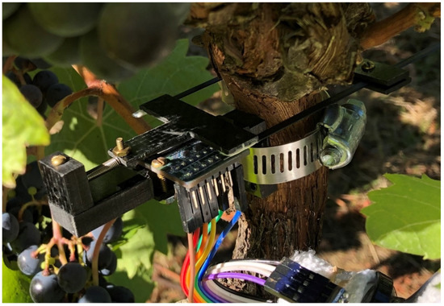
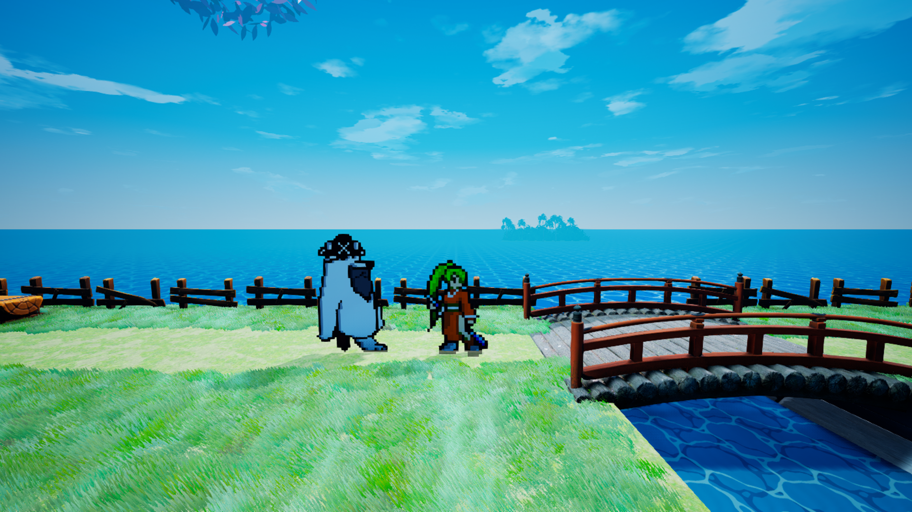

Featured Projects
Dark Aviary
A third-person hardcore horror game blending tension, atmosphere, and survival

Dark Aviary is a third-person survival horror experience set in a decaying world overrun by a viral outbreak that mutates humans into grotesque, birdlike creatures. Players step into the role of Ben — a skilled weaponsmith fighting to survive while searching for his family amid chaos. The game combines claustrophobic tension with intricate weapon crafting and environmental storytelling.
Key Features:
- AI-driven encounter design focused on adaptive horror pacing
- Designed and implemented AI behaviors for enemy and NPC characters in Dark Aviary, a third-person hardcore horror game
- Developed adaptive enemy AI systems to create tense, survival-driven encounters inspired by Dead Space and Metro
- Collaborated with designers and animators to ensure AI interactions enhanced gameplay immersion and challenge
- Optimized AI routines for performance while maintaining unpredictability and realism in enemy behaviors
- Contributed to gameplay iteration through playtesting and tuning AI difficulty, ensuring balance between challenge and player experience
- Assisted in prototyping new AI mechanics to support survival horror storytelling and player engagement
- Assisted in prototyping new AI mechanics to support survival horror storytelling and player engagement
- Mid-production with narrative, AI design, and level scripting in active development
Cicada
A solo indie 3D action platformer where recoil becomes your movement
Cicada is a solo-developed indie action platformer inspired by retro Japanese aesthetics. Players use gun recoil to propel themselves through procedurally generated environments, where every shot doubles as both weapon and movement. Featuring physics-based traversal, roguelike relic systems, and stylish world design, Cicada turns mobility into art.
Core Systems:
- Recoil-based traversal combining combat and mobility
- Procedural level generation with dynamic relic modifiers
- Boss encounters tied to challenge portals and in-world lore
- Vending machine AI shopkeepers with unique personalities
- Developed in Unreal Engine 5 targeting a 2026 demo release
OPEnS Lab Research Project (Sep 2024 - Jun 2025)
Collaborated with a multidisciplinary team to develop LOOM, a modular and extensible Arduino library for IoT sensor and actuator systems in environmental research. Contributed to system architecture using C++, emphasizing modularity, low-power operation, and cross-device compatibility.
Personal Project (2022 - Present)
Designed and developed an original narrative adventure game with a 9-chapter structure centered on emotional themes. Features a unique cast of party members with distinct gameplay mechanics, hybrid 2D pixel art with 3D world design, and comprehensive game design documentation.
Academic Excellence
Oregon State University (2020-2025)
Bachelor of Science in Computer Science with Honor Roll achievement. Comprehensive coursework including Data Structures, Algorithms, Software Engineering, Operating Systems, Database Management and Japanese language and Culture Minor from Second-Year through Third-Year levels.
Technical Skills
Technologies & Languages